Pilates
SecretsSatu Mare
Pilates pe reformer, în fiecare zi.
Programează-te Ședințe în fiecare zi, prin aplicația GMA.
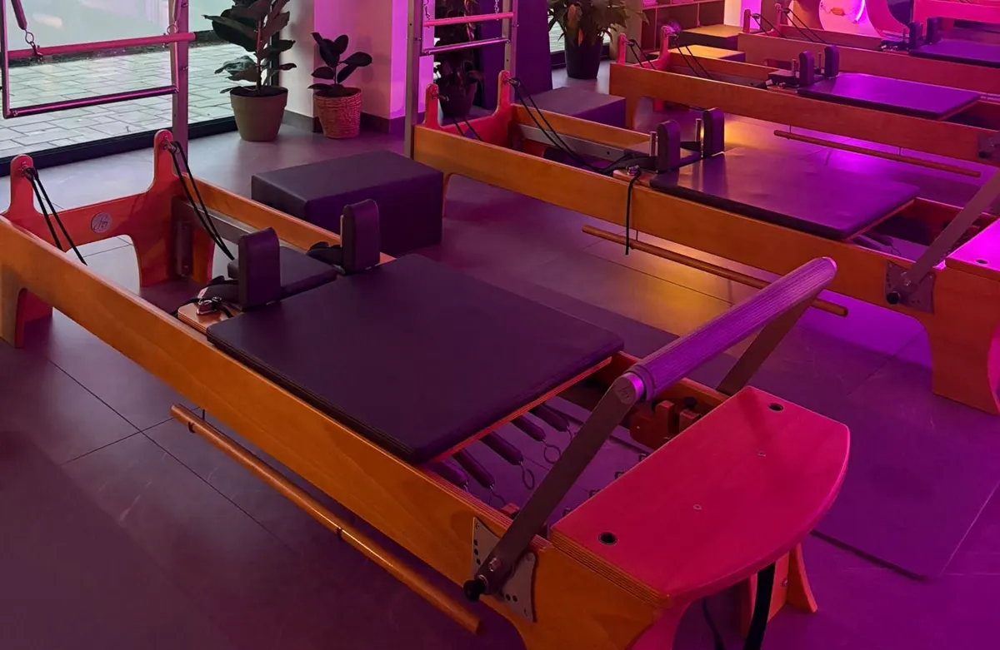
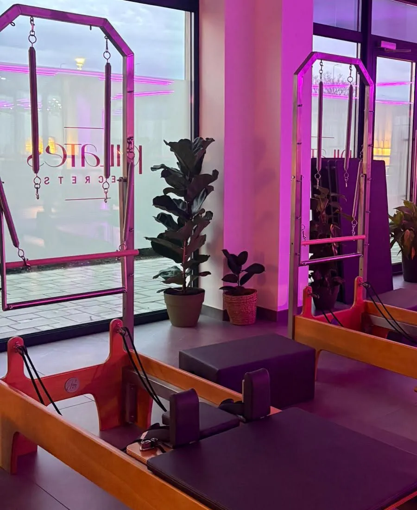


Pe reformer, pe turn, în fiecare zi, și pe terasă.
Exercițiile se fac pe aparatul cu arcuri și cărucior.
Vii când îți convine.
Ședințele se țin în fiecare zi. Îți alegi ora și îți rezervi locul.
Nou din noiembrie
Cursul Reformer Fundamental.
Pe lângă ședințele obișnuite, un curs de 8 ședințe pentru cele care vor să descopere pilatesul sau să își consolideze tehnica, ca să lucreze corect de la început.
Luni și miercuri, de la 18:00 la 19:00. Înscrierea, din aplicația GMA sau la telefon. Locurile sunt limitate.
Înscrie-te la cursCe simți după o lună.
- Posturamai dreaptă
- Corpulmai puternic
- Durerilemai puține
- Energiamai multă
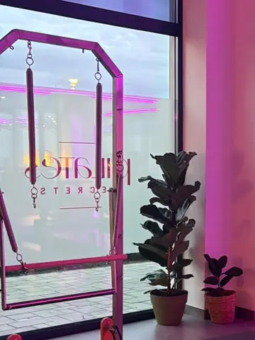
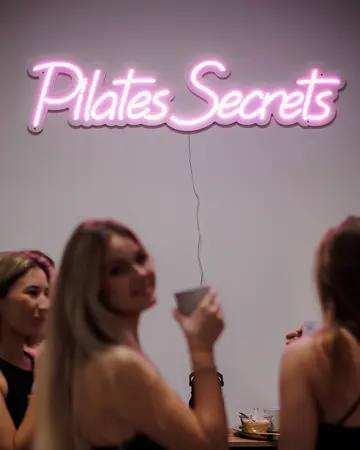
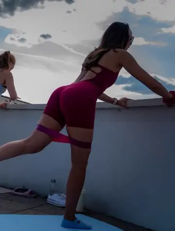
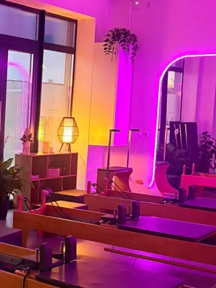
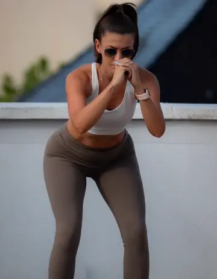
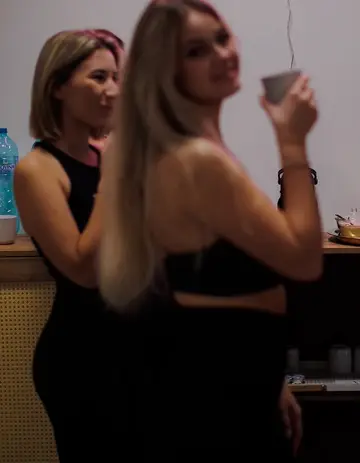
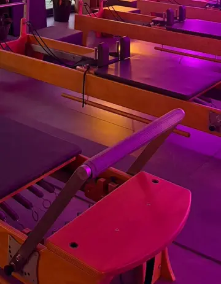
Studioul, în poze.
Vino să-l vezi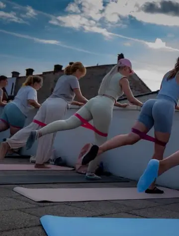
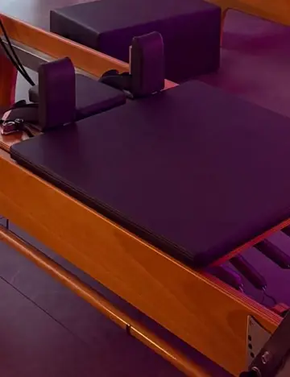
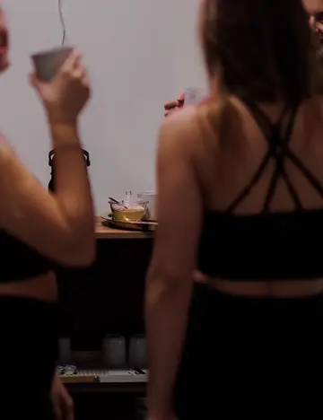
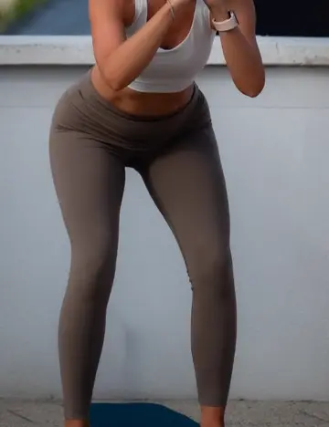
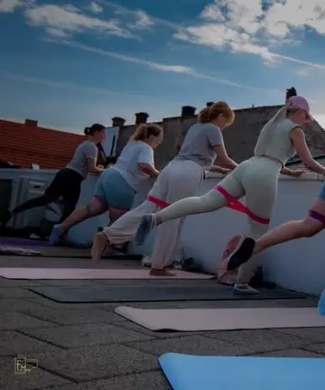
Înainte să vii.
Cum îmi rezerv o ședință?
Din aplicația GMA, unde vezi ședințele din fiecare zi și locurile libere, sau la telefon, la 0749 024 172.
Pot veni dacă n-am mai făcut pilates?
Da. Cursul Reformer Fundamental e făcut exact pentru cele care vor să descopere pilatesul și să învețe tehnica corectă de la început.
Când e cursul Reformer Fundamental?
Lunea și miercurea, de la 18:00 la 19:00. Prima ședință e luni, 2 noiembrie, iar cursul ține o lună, 8 ședințe.
Unde e studioul?
Pe Str. Botizului 49 M, în Satu Mare. Ne găsești și pe Instagram și Facebook, la pilates_secrets.
Te așteptăm pe Botizului.
Str. Botizului 49 M, Satu Mare
pilates_secrets